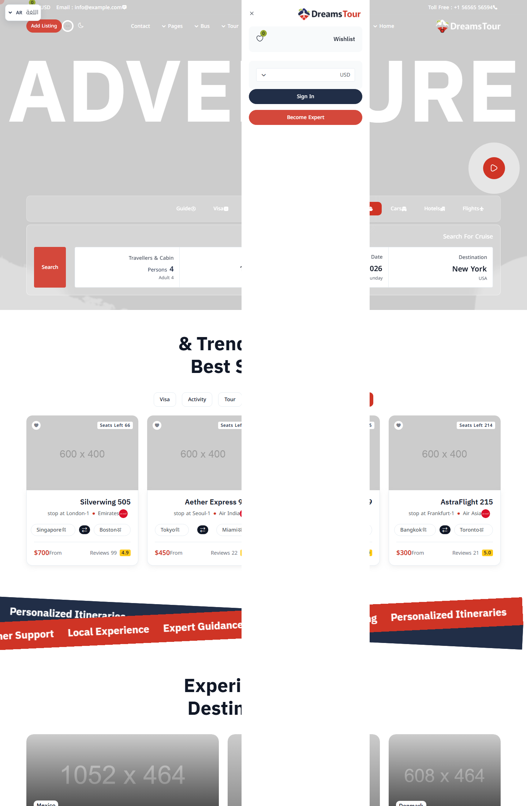
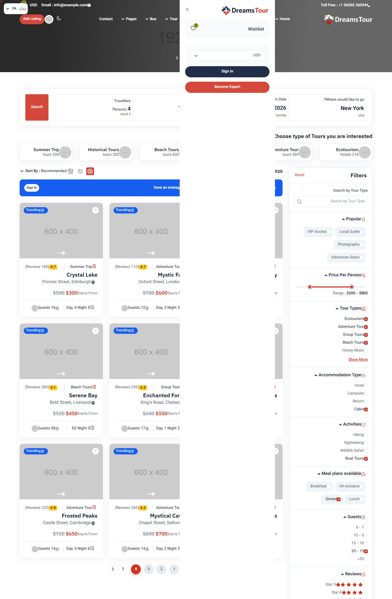
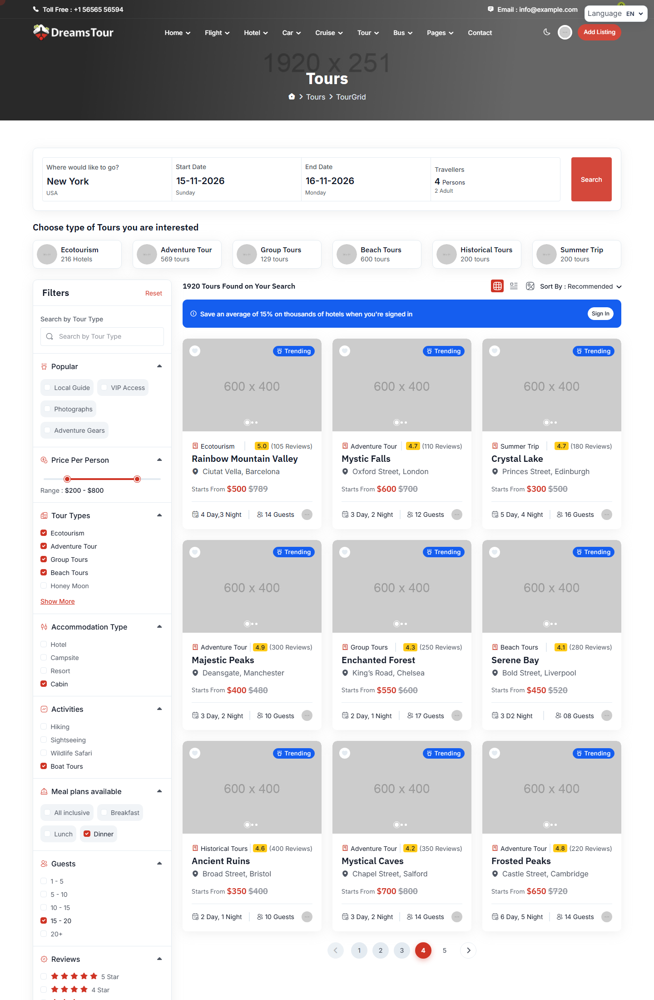

Gate 9.1 — نتیجه فاز اول
این بار صفحهها از خود قالب Dreamstour رندر میشوند، نه از HomeExperienceFrame سفارشی.
وضعیت فاز اول:
- قالب Dreamstour وارد
frontendشد. - فقط یک درخت App نگه داشته شد:
(public-pages)+(auth-pages). - درختهای
(feature-module)،(auth)وindex-10/12تکراری حذف شدند. - Build سبز شد: ۵۵۴ صفحه استاتیک، ۳ زبان.
- ۱۲ Home Experience به ۱۲ View واقعی قالب وصل شدند.
- Language Switcher واقعی +
lang/dir+ فونت FA/AR/EN. - Header و Footer صفحه اصلی بدون تکرار رندر میشوند.
- Settings به Hani API وصل است و وضعیت اتصال را نشان میدهد.
- مسیر
/به/faهدایت میشود.
نکته:
متنهای داخل Viewهای قالب هنوز انگلیسی هستند. زیرساخت locale/RTL آماده است،
اما تبدیل متنهای Hard-coded قالب به پیامهای FA/AR مرحله بعدی است.
اتصال دادههای واقعی Hani هم مرحله بعدی است.
Home — فارسی / RTL

Home — English / LTR

Home — العربية / RTL

Settings — انتخاب Home Experience

Tour Grid — فارسی

Tour Grid — English

Visa Grid — العربية

فایلهای کلیدی
frontend/src/app/[locale]/layout.tsxfrontend/src/app/[locale]/(public-pages)/page.tsxfrontend/src/features/home-experience/infrastructure/registry.tsfrontend/src/i18n/routing.tsfrontend/src/proxy.tsfrontend/src/layout/publicLayout.tsx